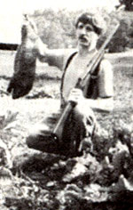

As Mother's gardeners found last summer, when a ground hog raids the plot, something's got to go!
I never dreamed I'd get excited about shooting a ground hog. For that matter, I never dreamed I'd ever try to shoot one. Oh, I used to strap on my toy six-shooter and cowboy hat when I was six or seven and go hunt birds or rabbit with my dad. (I was really the retriever-still, I'd always pull out my gun and bop the prey over the head before handing it to Dad.) That was about the extent of my involvement with firearms. After all, for 10 years I was a vegetarian.
But we all change, and our ideals occasionally have to adjust to reality. After my wife, Susan, and I had lived in the country for a few years, I dropped vegetarianism altogether. In fact, I began to think that having a gun would be a good idea. I figured I could use it to kill homegrown meat animals, fire over the heads of any dogs that got into the chickens and maybe even hunt a few squirrels. It just so happened that MOTHER's editor, Bruce Woods, had a Savage overunder combination (a 20-gauge shotgun on the bottom with a .22-magnum rifle on top) that he wanted to sell. We worked out a deal, and I brought the weapon home.
Then Susan and I had our first encounter with that fabled garden raider, the woodchuck (better known in Southern circles as the ground hog), and I knew that having a gun was a great idea.
We had just moved to a new home way up on top of a mountain, at a spot my sister, Nan, had lived. Both Nan and our landlord warned us they'd often seen ground hogs. Sure enough, during my fall plowing, I unearthed two burrow entrances and spotted three more along the fence, hidden among the poison ivy. I knew trouble was ahead.
I bought some targets and began to practice. My sister looked on in dismay. She remembered the years when I wouldn't eat animals, much less shoot them, so she couldn't imagine me killing a ground hog. I did consider alternatives, of course. Fencing was out; burrows had been dug under the fence that was already there, so why put up another? A live trap might work all right, but I didn't have one of the contraptions. And since, as MOTHER's staff gardeners, our garden is our livelihood, we couldn't experiment with a lot of "maybe they'll work" home remedies. No, I decided that I had better go the sure, quick route.
So I waited for spring and the chance to put my new gun to the test. My sister smugly thought she'd moved away from ground hog country, but it turned out that she and her man, Seth, had gone from bad to worse. When they put in their family garden the next spring, they found out they shared the plot with deer, opossum and rabbit-as well as ground hogs. They borrowed my electric fence charger and put low and high lines around the garden. That seemed to keep most of the varmints out, but the ground hogs just slipped over and under the hot wires.
Seth bought a Havahart live animal trap, set it up and waited hopefully. Meanwhile, Susan and I were waiting nervously. Our spring crops of broccoli, cabbage and carrots were just coming on. We figured it wouldn't be long before we could expect company.
Then it happened. Some carrot tops and broccoli leaves were missing. The damage was so slight and spotty that we first blamed the chickens, so they were all either penned up or routed to the soup pot. A couple of days later, though, the ent ire broccoli patch was defoliated. Then the lettuce bed was hit. And right after that, our big field planting of green soybeans was mowed flat. Things were getting serious.
I kept peering out the kitchen window toward the garden to see if I could catch the varmint in the act. I made plans for a stakeout. I traded stories with my sister. She and Seth were losing pea, green bean, collard, cucumber, cantaloupe and even sweet potato plants to their omnivorous ground hogs-but none had stepped into their apple-baited trap.
I started shutting the dog inside and sneaking myself outside every evening at dusk. But Susan and I were just too noisy. The critter attacked only when we were gone; clearly, it knew the sound of our returning car. Seth and Nan weren't having any better luck. Seth rubbed his trap down with fresh walnut hulls to cover any human smell and baited it again with fresh apples. The race was on.
Our soybeans grew back, only to be mowed down two more times. And now a truly gloomy prospect loomed. Susan and I both had to be away from the farm for a few days, and I surely didn't want to leave a ground hog in charge of tending our plot. Susan left a week before I did. Her absence created the perfect opportunity for my stakeout: There'd be fewer people around to make noise and plenty of time to watch. I was determined that both the ground hog and I would be gone by the end of the week.
As the days passed, I kept the dog tied up and one eye on the garden. I even parked the car up the road from the house and crept down to try to catch the critter unawares. No luck. What should I do, sleep out on top of the garden shed?
The day before I was supposed to leave, I came home from town feeling weak and sick. I decided to take a hot bath in hopes it would make me feel better. I'd just gotten out of the upstairs tub, pulled my pants up and started drying my hair-when I looked out the window and there it was; a fat 'hog was grabbing a mouthful of straw mulch out of the garden and heading back to its hole. Adrenaline rushed through my body and flushed out my illness. My mind raced with thoughts. Where's the dog? Where's the gun? What should I do?
The gun was inside, but so was the dog. I figured that trying to make the dog stay in when the gun and I went out would create too much noise. So I decided to shoot from the upstairs window. I got the gun, then faced another problem. How should I shoot it? There are a lot of good things about having a shotgun/rifle combination, but the disadvantage is that you have only one shot of each type. I was far from being an experienced hunter and couldn't decide which shell would be best. The ground hog was 50 to 100 feet away. I could wait and hope it would come closer. That way I could use the broad-patterned 20-gauge shotgun to be sure of a hit and figure that, at that distance, the pellets'd penetrate the tough hide. Or I could shoot a .22 at it now and hope my aim was good enough to do more than wound it.
Suddenly, the 'hog made the decision for me. It moved farther away-within 15 feet of the den. I put the rifle on the .22-magnum setting, rested it on the windowsill, took a deep breath and fired. The woodchuck dropped right there. I ran down the stairs and out the door, gun in hand in case I needed to follow up with the shotgun blast. The ground hog didn't move. The bullet had gone right through the heart.
A week or so after that, Nan and Seth caught up with us-they trapped their first ground hog in the Havahart. They soon caught another. Then, as nature's wild fruits began to ripen, it became harder and harder for Seth and Nan to tempt ground hogs into their trap. Seth started sitting quietly under a walnut tree for three and four hours straight, a .22 rifle under his arm, until he, too, had dropped a crop raider.
Susan and I managed to get the first ground hog, but eventually my sister and Seth wound up catching the most critters. But I think that, ultimately, the ground hogs usually win. They'll either take your vegetables or your time and patience-whichever you choose to give up.
GOPHERS AND MOLES
Likely targets: Gophers eat the underground portions of garden crops. Their mounds sometimes smother small plants, and their gnawing can girdle and kill young trees. Moles eat insects but no garden crops.
While moles dig extensive tunnels that mar the looks of a manicured lawn or garden and can damage some plants, for the most part these animals are beneficial. Voracious insectivores, they eat their weight each day in cutworms, wireworms, sowbugs, grubs, centipedes, millipedes and Japanese beetle larvae. (True, they do prey on earthworms, as well.)
Gophers also tunnel around just below the surface, but these larger creatures (a gopher may weigh 12 ounces, a mole just three) readily consume crop roots. They also live more communally, with as many as 16 to 20 animals per acre.
Controls:
Castor beans or mole plants (Euphorbia lathyris) can be planted around or in a garden. The bean seeds can also be dropped in tunnels. However, both plants are highly poisonous and should not be used in any gardens near small children.
Spray a solution of one tablespoon of castor oil and one tablespoon of liquid detergent per gallon of warm water on soil and plants.
Scatter human or dog hair about.
Stick pinwheels into tunnels, about 20 feet apart. The vibrations are reported to repel the beasts. Commercial "gopher windmills" are available.
Set empty narrow-mouthed bottles in tunnels. Winds will produce a moaning noise that is said to repel the pests.
Place elderberry cuttings in the tunnels. Sprinkle chili powder and powdered garlic into tunnels weekly.
Set baited live traps near gopher exits and in mole tunnels.
For serious problems, erect a 1/4-inch hardware cloth fence that extends two feet belowground and one foot above.
Place rolled-up pieces of juicy Fruit gum in mole tunnels. (Wear gloves to mask your scent when you unwrap the gum.) Moles love it, but it clogs their innards, fatally.
DEER
Likely targets: Leafy crops, fruit trees.
Deer nibble up garden greens. They'll also chew tender growing tips of fruit trees in summer and the buds in winter.
Controls:
Hang bars of deodorant soap (Dial has the best record among gardeners we know of around vulnerable crops or orchards. This control has done a fine job of repelling deer, in both experiments and practice. One warning: Ground hogs love soap!
Spread lion dung (from the zoo or circus) around vulnerable crops, or make it into a tea and spray it on plants. Some gardeners swear by this technique. Scatter dog or human hair around the plot, or hang it in small cheesecloth sacks. (Check local barbers or dog groomers for supplies.) Another often sworn-by method.
Scatter dried blood, blood meal, or fish heads around, or hang such materials in sacks. Yet another often recommended tactic. Blend an egg in a gallon of water, and spray the solution on vulnerable plants.
Get a dog that sleeps outside and resents intruders. Construct a blinking or rotating light to use at night. This works much better than a stationary light that's always on.
Fencing, though expensive, is the permanent solution for an extensive deer problem. Deer can jump, though, so the fence needs to be at least eight feet high, or four to five feet high with a barrier of horizontal wires extending five feet beyond the fence. A six-strand electric fence, with the strands spaced 10 inches apart and the bottom one eight inches off the ground, is also generally effective.
GROUND HOGS
Likely targets: Carrots, peas, beans, sweet corn, alfalfa, grass, weeds and more. The ground hog is a voracious vegetarian.
Controls:
Catch them in live traps and transport them far away. Set traps near their burrows (under a brush pile, beneath a tree root, near a fence or at some other concealed place) or along their main trails (look for lines of matted grass). Bait traps with apples, green beans, ripe bananas or carrots. (The National Park Service once trapped ground hags that were chewing the rubber parts off car engines by baiting the traps with old radiator hoses.) Catching the entire family will probably require resetting the traps a few times. Afterward, plug the burrows to discourage other ground hogs from moving in.
A good dog will bark loudly and chase off any ground hogs it sees. (A smart dog will carry its aggression no further; woodchucks are fierce fighters when cornered.)
Some people claim that planting garlic or onions around a ground hog burrow will send them packing.
Sprinkle ground red pepper around their holes and throughout your garden.
Alter their habitat. Remove brush piles, tall weeds and other shelter near your garden to deprive them of the cover they need.
Fencing a ground hog out of your plot is difficult and not all that likely to succeed, since the animals are good at both climbing and burrowing.
If you want to try, however, build a sturdy fence at least four feet high that extends at least one foot underground. Plant alfalfa and clover away from your garden and hope they eat these favorites instead of your crops. Shoot them if you're willing to use the meat. To do so, bleed the fresh carcass, then skin and clean it. Be sure to remove the tear-shaped musk glands at the small of the back and directly behind the forelegs. Soak the meat in a marinade for a day or so, then roast, fry, bake or stew.
RACCOONS AND SKUNKS
Likely targets: Everybody knows what raccoons like most-sweet corn! And they have an uncanny knack of waiting until the night it's perfectly ripe before they harvest it. They're also fond of melons and other fruits. A skunk's first love is insects-grasshoppers, beetles, crickets and grubs-so in general this animal should be left alone. But skunks often pull nocturnal corn raids, too, enjoying the treat but letting the raccoons take the blame. Prevention measures are the same for both.
Controls:
Catch the raider in a live trap. Sardines, marshmallows and honey-soaked bread all make good bait. Start trapping a few days before the coveted crop is ripe. And if you catch a skunk, slowly walk up to the trap, cover it with a dark tarp, and then gently transport the well-armed mammal far away.
One ploy that's been used with some effectiveness is to play a radio in the corn patch all night long. Talk stations work best. One gardener vented his frustrations onto a continuous loop cassette tape. He played that speech (all about how angry he was and why the animals should leave his corn alone) at night in his garden and reported excellent results.
An outdoor light that either blinks on and off or rotates will scare coons and skunks away. (One that remains stationary or constantly on doesn't work.) Several strands of low-strung electric fencing should work. Raccoons can climb over most noncharged barriers, but some growers report success with chicken wire fences that are not supported along their top foot of length. The fencing apparently bends so far backward when the animal climbs it that the creature can't make it over.
Surround the corn or melon patch with a three-foot-wide horizbntal barrier that coons and skunks don't like to walk overblack plastic, newspaper or mesh fencing, Wrap individual ears in foil, plastic, stockings, etc. This method, however, is quite time-consuming and may damage the crop in hot weather. The University of Illinois Extension Service says that sprinkling baby powder on corn stalks and leaves when the ears ripen will deter the raiders.
Reapply the powder after rains. Sprinkle ground red pepper or a mixture of powdered garlic and chili powder around vulnerable crops. Renew weekly or after rains.
DOGS AND CATS
Likely targets: Garden soil (and whatever grows there).
Dogs can wreak havoc running over newly planted beds or digging up crops-in search of something known only to themselves. And cats will wander at will through your plot, using it as one gigantic litter box.
In general, experienced gardeners are less frustrated by wild animals than by pets that are allowed to run loose. Nobody complains when a woodchuck is trapped and transported elsewhere. But should that befall someone's dog, a major ruckus will soon follow. Somehow, it always seems to be the neighbors' pets, not your own, that do the damage. As a result, the problem becomes one of social relations.
Controls:
Talk with your neighbors about the problem. You may have to balance tact, straightforwardness and a willingness to compromise.
Spray the perimeter of your plot with a hot pepper solution.
Fence your plot with barbed, woven or electric fencing. (Space the strands of an electric fence 10 inches apart, with the bottom strand six inches off the ground. And run wire loops into any dips the intruders might crawl through.) Fencing will work against dogs, but not cats.
Pound stakes in the ground where visiting dogs like to travel. Plant a catnip patch away from your main garden to lure felines.
Make sure your compost piles are properly built so they don't have any exposed garbage, which will attract pets.
Own a well-trained dog that chases off animal intruders.
RABBITS
Likely targets: Carrots, strawberries, peas, beans, lettuce, tulip shoots, grasses, weeds and the barks of fruit trees and raspberries.
Rabbits are famed as garden raiders, but often don't live up to their reputation. Frequently they are present but cause little damage.
Controls:
The long list of reputed rabbit repellents people sprinkle around a plot includes wood ashes, ground hot peppers, chili powder, garlic powder, crushed mint leaves, tobacco dust, tankage or blood meal, talcum powder and powdered rock phosphate. Most of these need to be replenished every so often or after rains.
Snake effigies, commercial or homemade from old garden hose, can be effective.
Grow garlic, onions or Mexican marigold (Tagetes minuta) in the garden.
A well-mannered dog (one that doesn't itself damage the garden) can be a very effective deterrent. Share your harvest.
Either plant extra for the rabbits, or sow extra crop seeds outside the main garden for the rabbits to enjoy. Use protective cages or covers for very susceptible crops. Wrap the bases of fruit trees with hardware cloth or other sturdy material to deter winter rabbit damage.
Fence your garden. Wire fencing should be partially buried, extend at least two feet aboveground and have holes smaller than two inches. An electric fence should have two strands, set four and ten inches from the ground.
Live-trap them and release them somewhere else. Rabbits prefer covered to exposed traps. Apples and carrots make good bait.
|
The savager of soybeans bites the dust! |
 |
|
|
|
|
|
|
|
|
|